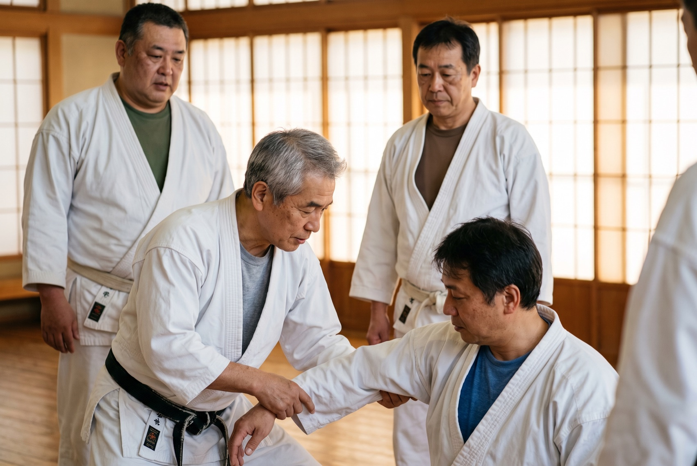
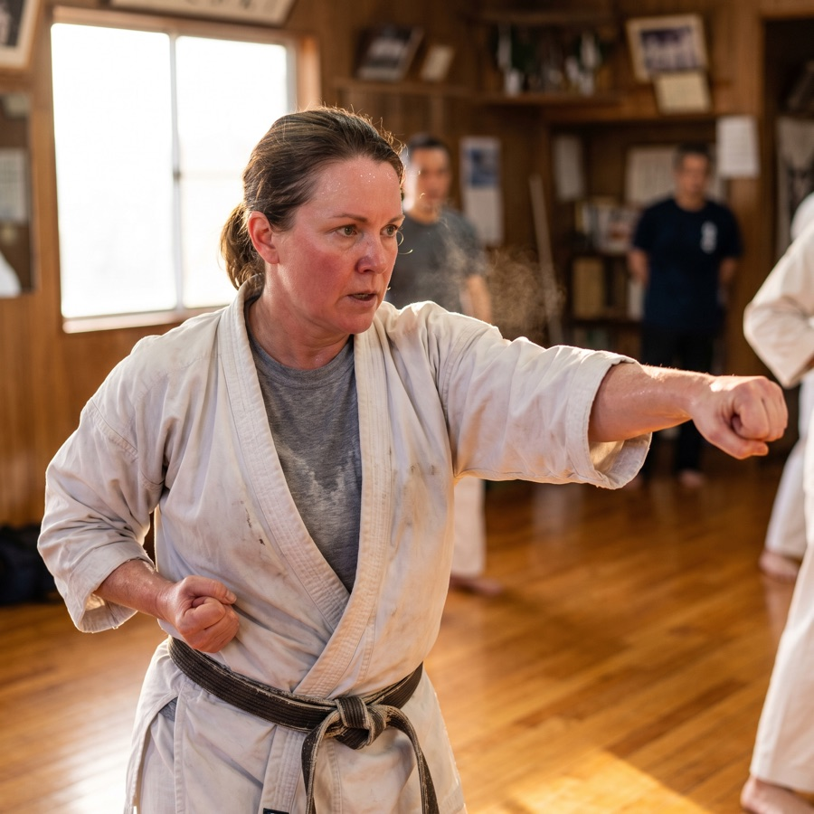
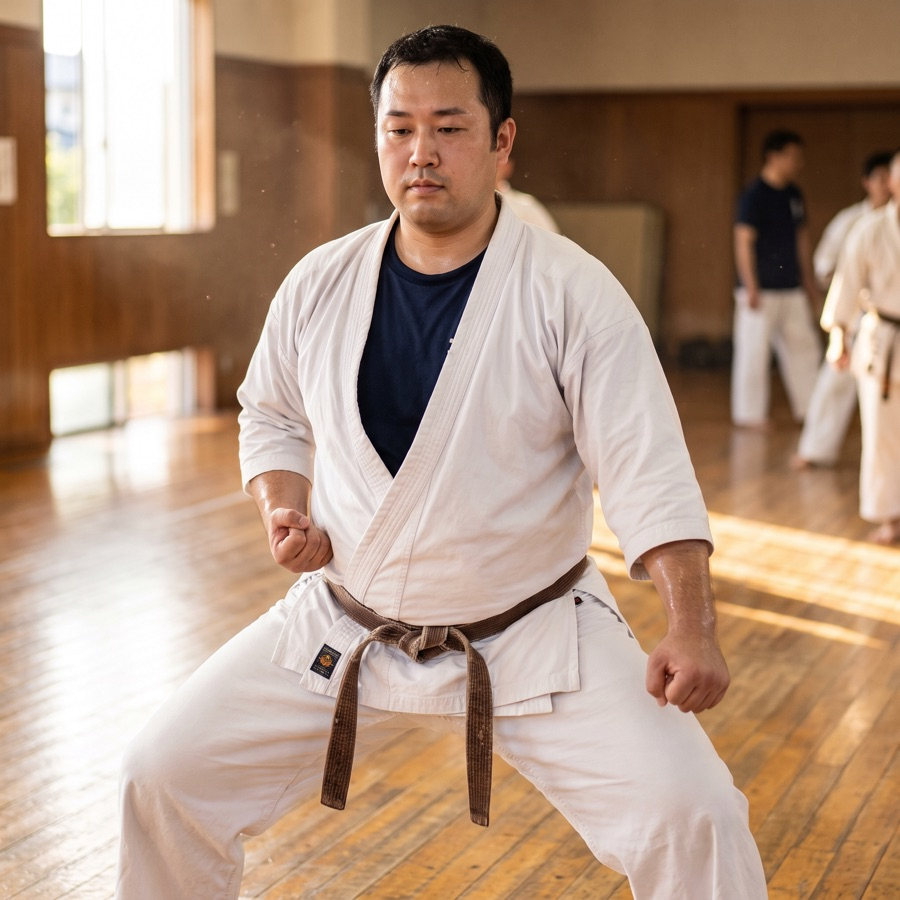
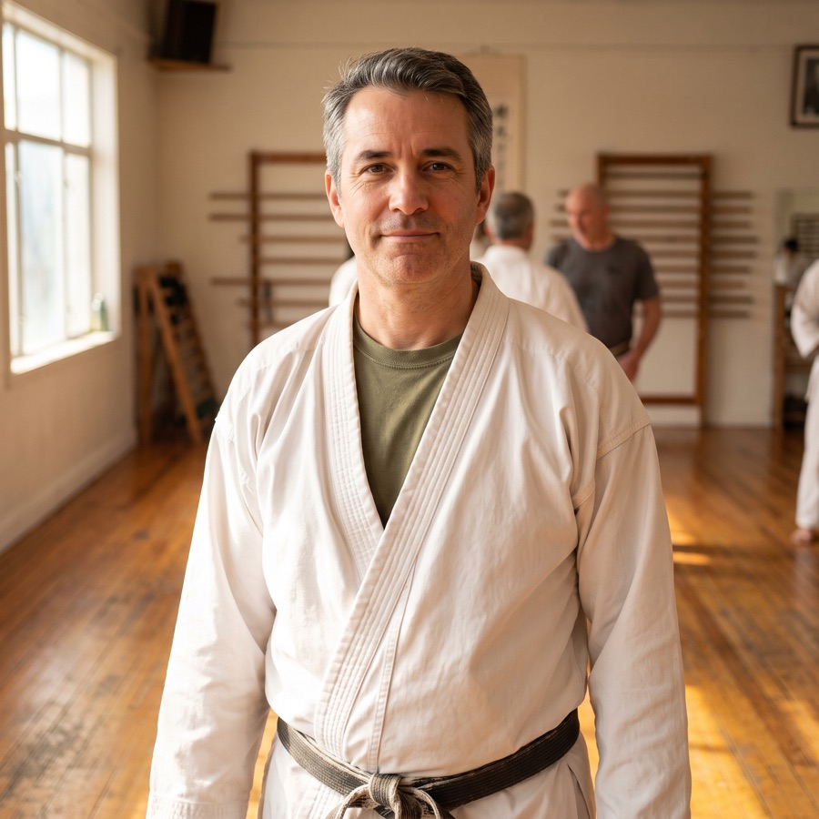
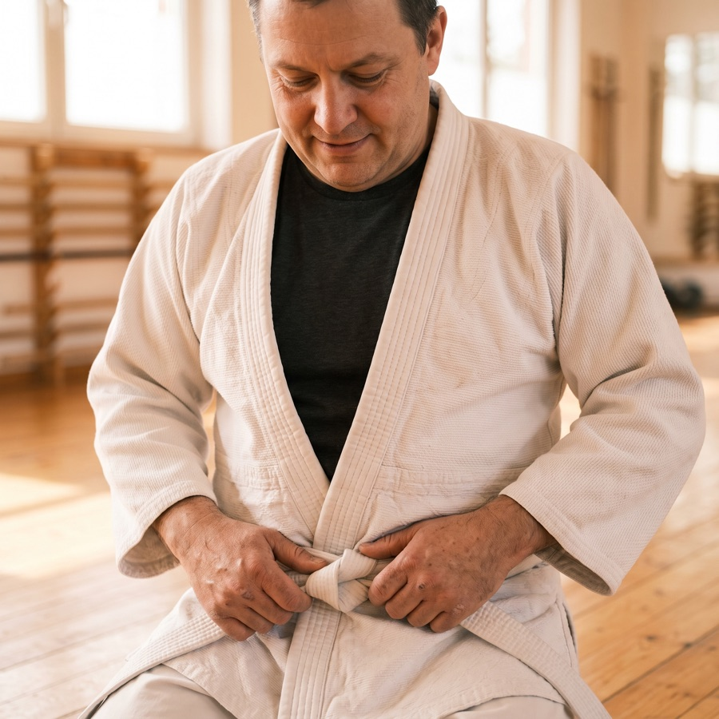
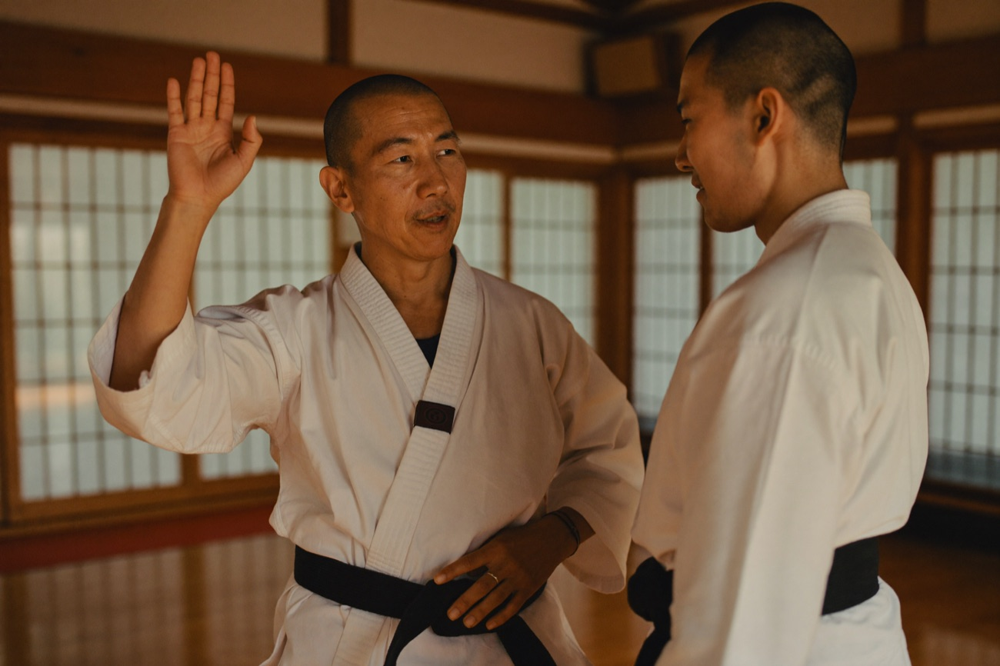

A free intro class for adults 18+. Beginners welcome — you will not be the only white belt in the room, and nobody cares what shape you're in when you walk through the door.
Takes 60 seconds. We'll email to confirm your time.
You're booked. 🥋
Check your email — we're saving you a spot with the instructor and we'll confirm your class time shortly.
Sound familiar?
Something's been nagging at you. It's probably one of these — and if it is, you already know which one.
It's not discipline you're missing. It's a reason to show up. The treadmill never gave you one. A belt you have to earn does.
Your first class, minute by minute
The fear is being the conspicuous white belt — worse, next to teenagers who outrank you. Here's how the first class actually goes. Read it and the fear loses its grip.

You're set up with an instructor or a senior adult student from the first minute — not dropped into a line to fend for yourself.
Knees, back, shoulders, old injuries — the instructor asks before you bow in. Modifications exist for all of it. The program scales to the body you have now, not the one you had at 25.
Nobody spars on day one. Nobody spars until they decide they're ready. Day one is technique, movement, and catching your breath — that's it.
You do the real class end to end. No spotlight, no ceremony, no sales pitch on the mat. Then you decide if you're coming back.
Our adult class right now
You will fit.
What an hour on the mat actually gives you

Not reps for the sake of reps — skill that stacks. Every class you're measurably better at something than you were last week. The gym never gave you that.

You physically cannot check email while someone's teaching you to move. One hour where the job, the kids, and the noise are gone. Most people don't know how badly they needed it until they have it.

In how you carry yourself, how you take up a room, and yes — in knowing you could handle yourself if it ever came to that. It follows you off the mat.

Not for your kids. Not for your job. A rank you earn, a skill nobody can hand you, a thing you did for yourself. When was the last time you had one of those?

Who's teaching
TODO: one grounded paragraph — years spent teaching adults specifically, experience modifying training for bad knees, old backs, and late starters, and a human detail. If they started training late themselves (say, at 30), lead with it — an instructor who was once exactly where you are is the whole point.
TODO: rank/credential · years coaching adult beginners
If you've been watching from the bench
You've watched them bow in three nights a week for months, and every time you've thought about it. This is the sign. Your first class is free too — and yes, there's a schedule that works around drop-off.
Ask about the family plan when you come in.
From adults who walked in exactly where you are
"I started at 43 convinced I'd be the oldest person there by twenty years. I wasn't even close. Two years later I'm testing for my next belt and I move better now than I did at 35."
"It's the only hour of my week that's actually mine. My phone's in a cubby, nobody needs anything from me, and for sixty minutes I'm just learning something. I didn't know how much I needed that."
"I watched my daughter train for a year from the bench. Now we compare notes at dinner and she's genuinely impressed I can keep up. Best decision I've made in a decade."
The free class costs you nothing and commits you to nothing. No contract talk at the first visit — a gi comes later, if you decide to stay. Wear clothes you can move in, walk in or book online, and find out. If it's not for you, you'll know, and you'll never get a sales call.
— TODO: school owner's name
Good questions
No — that's backwards. The class is the getting-in-shape. Conditioning is built into the training, not a prerequisite for it. You start exactly where you are, and you'll be surprised how fast that moves.
Tell the instructor before class — everyone does, and everything modifies. Training around old injuries is routine here, not a special case. Nobody's going to throw you; you'll be taught.
TODO — HARD GATE: state the real schedule. (If the adult classes are genuinely adults-only, say so and list the nights. If 16–17-year-olds share the mat on certain nights, say exactly which ones — honesty here is a launch requirement, not a nicety.)
Honest answer: about a month until it starts to click. Everyone feels clumsy for the first few classes — that's universal, not a sign you're behind. The free class is where you find out it's more doable than it looks.
Gym clothes you can move in, and water. That's it — no gi to buy for the free class, no gear, no card. If you decide to keep training, a uniform comes later.
Then you're in the majority of people who walk in. The program scales to the body you have today. You set the pace, you take the breaks you need, and nobody is watching you the way you think they are.
Free · adults 18+ · no experience needed
Claim Your Free ClassThe class runs Tuesday whether you're there or not. Twenty years from now it'll still be running. The only variable is you.